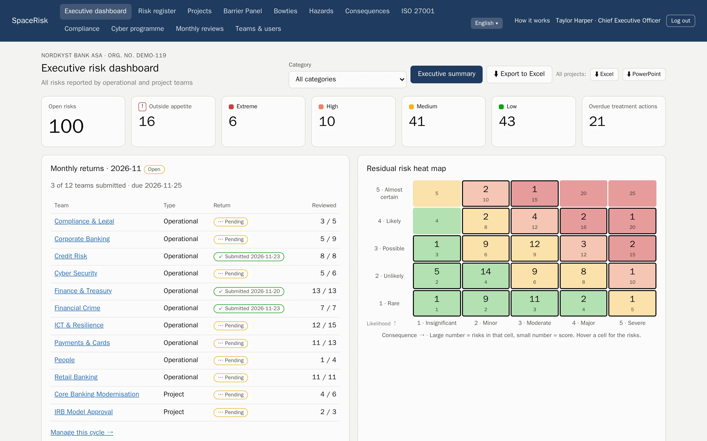
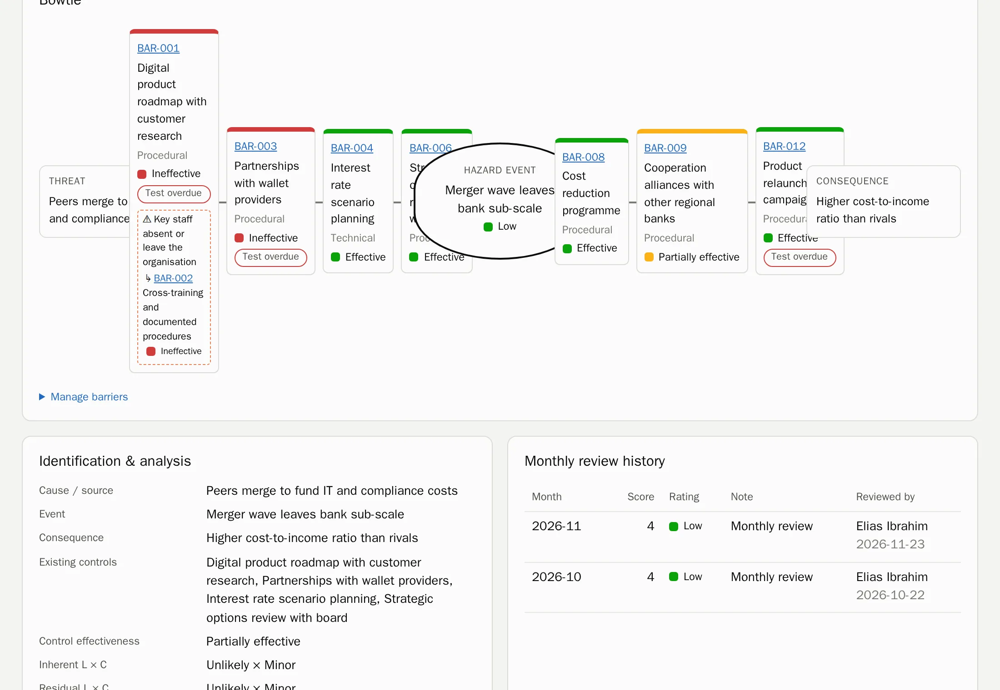
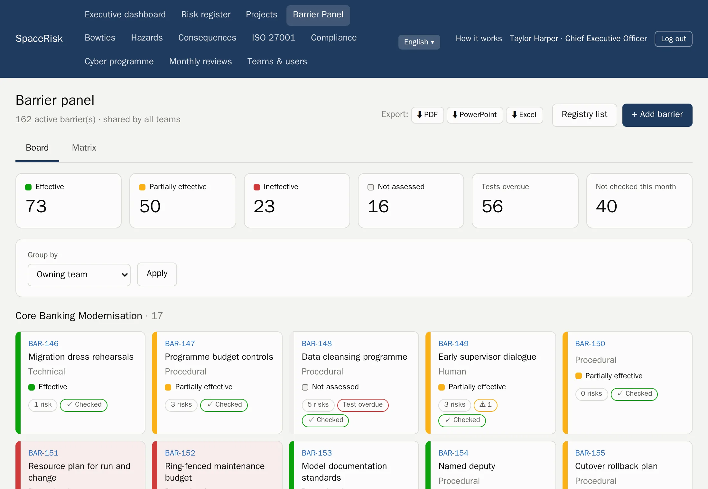
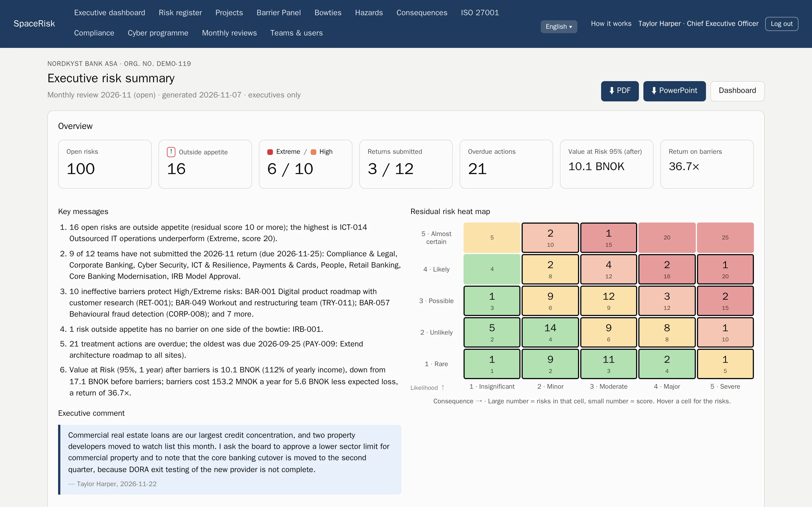
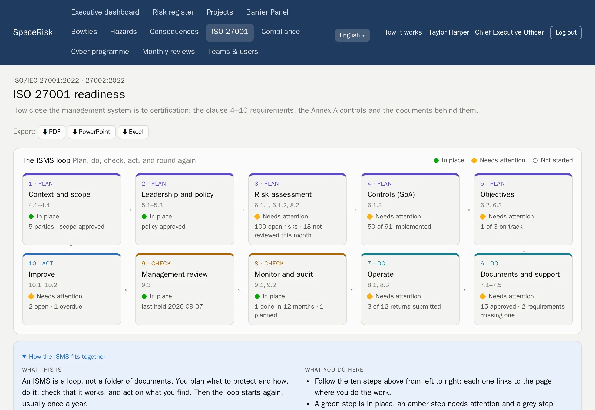
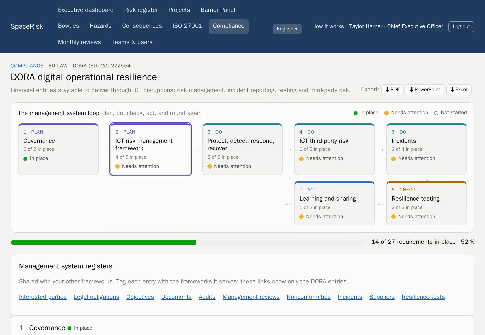
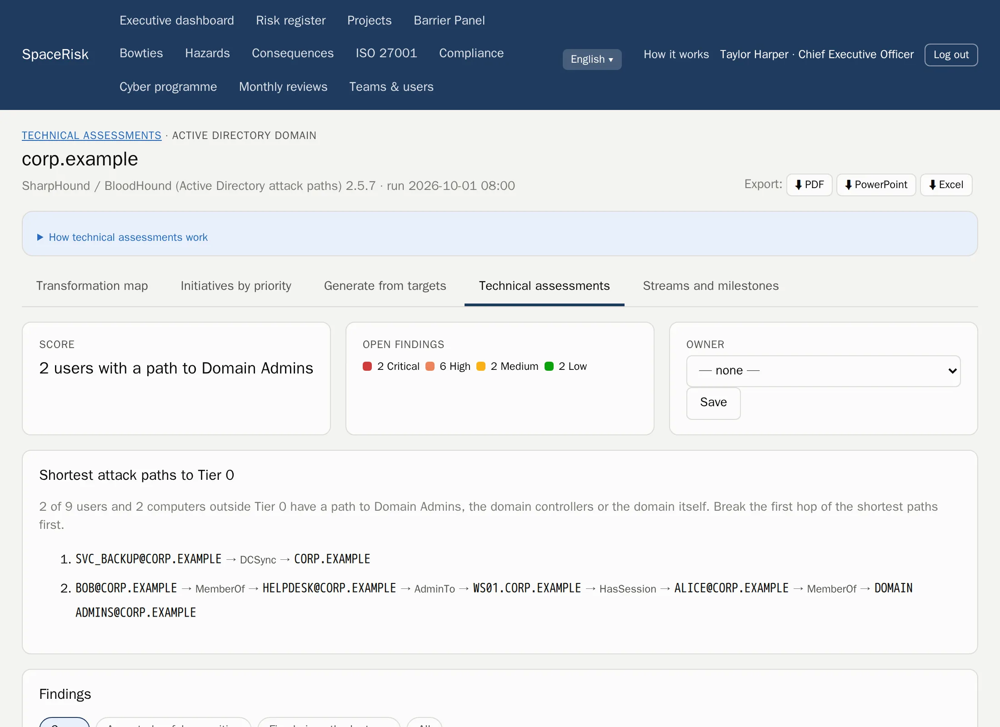
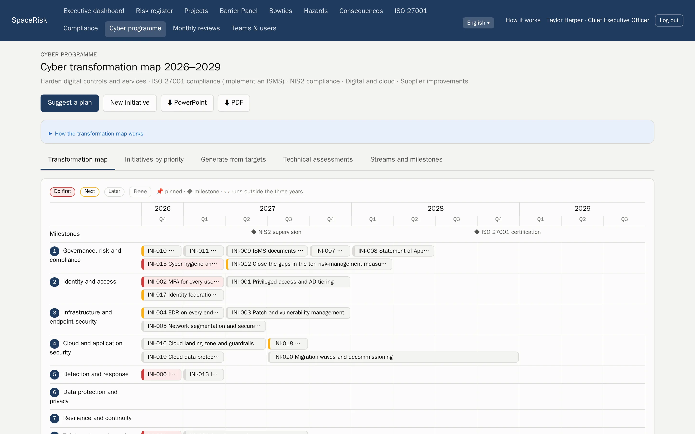

ISO 31000 risk management
Every risk, from the team floor to the boardroom.
SpaceRisk turns the risks your teams know about into living bowties, checks the barriers that stop them every month, and shows the board what it would cost.
Hosted by us or on your own servers. Your data is always yours.

- Banking
- Insurance
- Hospitals
- Oil and gas
- Electricity
- Software
- Public sector
- Logistics
- Construction
- Retail
How it works
The ISO 31000 loop, built into the month.
No separate risk project that goes stale. SpaceRisk runs the standard as a simple monthly rhythm that every team can follow.
- 1
Set the criteria
One scale for likelihood and consequence, your appetite and your categories.
- 2
Identify
Teams and projects record what can go wrong, where they work.
- 3
Analyse and evaluate
Inherent, residual and target ratings, against the appetite.
- 4
Treat
Barriers and actions with owners and deadlines.
- 5
Monitor and review
Every month each team reviews its risks, checks its barriers and submits its return.
Bowties and barriers
See what stands between a threat and the damage.
Each risk is a bowtie: the threats on the left, the consequences on the right, and the barriers in between. Barriers live in one shared registry, so one control can protect many risks, and you see at once when a weak one carries too much.
- Preventive and mitigating barriers, with effectiveness and the date each was last tested
- A Barrier Panel for the whole organisation, grouped by owning team or type
- Escalation factors, and the barriers that protect the barriers


Monthly reviews
One rhythm for every team.
Each month the team reviews every risk it owns and checks every barrier, then the team lead submits the return. You always know who is up to date, and the trend of every risk builds itself.
- Team and project dashboards, with a heat map and the trend for each risk
- Returns that can only be submitted once every risk is reviewed
- A comment for every month, and a full history for the auditor
For the board
Risk in the language of the board.
SpaceRisk puts a price on exposure: expected loss, a simulated Value at Risk before and after barriers, and the return on what the barriers cost. The executive summary writes its own key messages and is ready to present.
- VaR 95 %
- simulated, before and after barriers
- 1 click
- executive summary as PDF or PowerPoint
- Excel
- every register, ready to analyse

Compliance
Two modules. One management system.
Add the ISO 27001 module, the Compliance module or both. Each framework shows its loop with live progress and your next steps, and they share one set of registers: interested parties, legal obligations, objectives, documents, audits, management reviews, nonconformities, incidents and suppliers.
ISO/IEC 27001 and 27002
Clauses 4–10, all 93 controls, a Statement of Applicability, the ISMS loop and audit-ready exports. Includes the cyber programme.
ISO 22301 and ISO 45001
Business impact analysis with RTO and RPO, continuity exercises, worker consultation and the hierarchy of controls.
NIS2 and DORA
Incident reporting clocks, the supplier register and register of information, and resilience testing. With the Norwegian acts.
GDPR and ISO 27701
Records of processing, DPIAs and data subject requests with their one-month deadline.
ISO 42001
An AI system inventory with your EU AI Act assessment, and AI impact assessments.
Cyber Resilience Act
Products with digital elements and vulnerabilities, with the 24-hour, 72-hour and 14-day reporting clock.
- Each requirement shows the ISO 27001 controls that already cover the same work
- Every framework exports to PDF, PowerPoint and Excel, and joins the executive summary
- Overdue regulatory reports show on the executive dashboard


Guidance, not legal advice. Requirement texts are written in our own words.
Cyber programme
From security findings to a three-year plan.
Upload results from the tools your team already runs. SpaceRisk turns the findings into evidence on the right ISO controls, finds the shortest attack paths to your domain admins, and suggests a prioritised programme on a transformation map you can take straight to the board.
- PingCastle
- Prowler
- SharpHound
- Findings, trends and fixes per target, across every run
- Attack paths to Tier 0 from Active Directory data
- A scored transformation map, exported to PowerPoint and PDF


Agents and API
Let your agents do the paperwork. People still decide.
Scripts and AI agents get their own tokens and a documented REST API. They report and review risks, check barriers and upload tool results. In propose mode, every change waits in an inbox until a person approves it.
- OpenAPI documentation
- Every proposal is checked before anyone approves it
- Agent tokens are stored hashed
POST /api/v1/risks/ICT-014/review
Authorization: Bearer ••••••••
← 202 waiting for approval in the inbox
POST /api/v1/assessments/uploads?tool=pingcastle
Content-Type: application/xml
← 201 results storedShowcases
92 companies to explore, from banks to hospitals.
Start in a world you recognise. Every showcase is a fictional company with its own teams, risks, barriers and history, ready in minutes. Each comes with a sample executive summary as a PDF.
Built to be trusted.
Hosted or self-hosted
We run it for you, or you run it on your own servers, on Intel or ARM.
Your data is yours
Export everything as PDF, PowerPoint, Excel or a complete database backup, at any time.
Access by role
Executives see everything. Teams see their own. Money stays with the executives.
Seven languages
English, Norwegian, German, Spanish, French, Italian and Portuguese, for every user.
See SpaceRisk with your own risks.
Tell us about your organisation and we will set up a showcase that looks like yours.